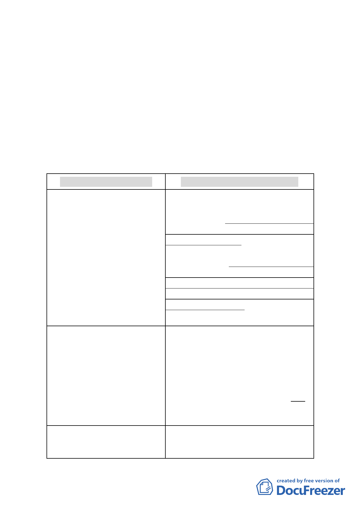

開研商會議結論（略以）…計畫檢討將摒除大範圍「聚落風
貌」保存概念（本計畫區亦為一般性社區，並不適宜以文化
資產保存法之聚落來規範），將計畫範圍限縮於幾處核心集
中區域，但對古蹟、歷史建築周邊仍要維持一定程度管制。
(三) 基於臺北市珍貴文化資產保存、歷史街區整體文化風貌形塑
及土地所有權人開發權益保障考量下，市府依文化資產保存
法及其相關法令規定、都市計畫法及其相關法令規定，訂定
之相關審議機制，應可兼顧文化資產保存及土地開發權益。
爰經市府認定符合都市計畫法第27 條第1 項第3 款規定辦
理本計畫修訂案。
三、 修訂內容重點概述：
96.8.9(原公告)計畫內容
100.7.25辦理公開展覽計畫內容
肆、計畫內容
肆、計畫內容
一、土地使用計畫及分區管制
一、土地使用計畫及分區管制
(三)本計畫範圍內不適用「臺北市 (三)本計畫範圍內保存區、聚落風貌保存專用
建築物增設室內公用停車空間鼓勵 區、第三種住宅區（特）（日式宿舍）、第三種商
要點」規定，且不得作為容積接受 業區（特）（日式宿舍）不適用「臺北市建築物
基地。
增設室內公用停車空間鼓勵要點」規定，且不得
作為容積接受基地。非屬前開地區亦不適用「臺
北市建築物增設室內公用停車空間鼓勵要點」規
定，惟為補足本計畫區週邊地區停車需求，經「臺
北市都市設計及土地使用開發許可審議委員會」
審議通過者，不受此限。
三、建築物量體、造型與色彩：
本計畫區內非審議地區之建築物，
面臨都市計畫道路或永久性空地
者，高度3.5 公尺及第1 層樓之立
面色彩以國際標準色系
HV/C=7.5-10YR 3-4/1-3 設 置 為
限，高度3.5 公尺及第2層樓以上之
立 面 色 彩 以 國 際 標 準 色 系 HV/C=
5-10 B 9-8.5/1-4設置為限。
三、建築物量體、造型與色彩：
本計畫區內非審議地區之建築物，面臨都市計
畫道路或永久性空地者，高度3.5 公尺及第1
層樓之立面色彩以國際標準色系
HV/C=7.5-10YR 3-4/1-3 設置為原則，高度
3.5 公尺及第2層樓以上之立面色彩以國際標
準色系HV/C= 5-10 B 9-8.5/1-4設置為原則。
六、非審議地區之院落規定
六、非審議地區之院落規定
(一)建築基地毗鄰古蹟、聚落風貌保 (一)建築基地毗鄰古蹟、聚落風貌保存專用
存專用區、第三種住宅區(特)(日式 區、第三種住宅區(特)(日式宿舍)及第三種商
-5-